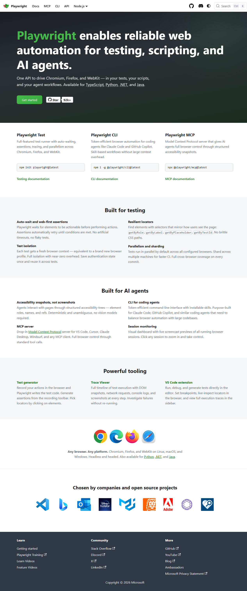

PASS
Browser: Chromium
URL: https://playwright.dev
Generated: Sun Jul 12 2026 21:57:48 GMT-0700 (Pacific Daylight Time)
Executive Summary: Test execution on https://playwright.dev with Chromium browser completed successfully in 3.6 seconds, without any errors or failures. Health Assessment: All tests are green and the environment is clean; no console errors or network issues were encountered. Risks: No apparent risks detected during the test execution. However, retesting under different conditions may be considered for future audits. Recommendations: Maintain current setup and continue with regular testing intervals to ensure quality and performance consistency.
